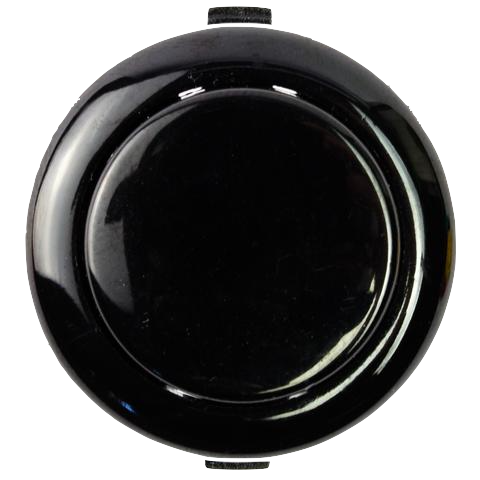

Robotique Jules-Verne

Jules-Vernes est une école francophone secondaire au coeur de Vancouver, Colombie-Britannique. Trouvé dans le quartier de Cambie Sud, cette magnifique école est nommé après l’écrivain célèbre Jules Verne. Cette école est une ce celles qui acceptent le programme Baccalauréat International. On accueille des élèves de toutes les cultures, de 7ème à la 12ème année. Notre école était construit en 2009. L’école J-V a une mascotte qui s’appelle l’Albatros avec des couleurs de gris et d’or. Les valeurs de cette école sont le respect, la persévérance, la responsabilité, l’intégrité et l’inclusion. Le site web de l’école est ici: Jules-Verne
